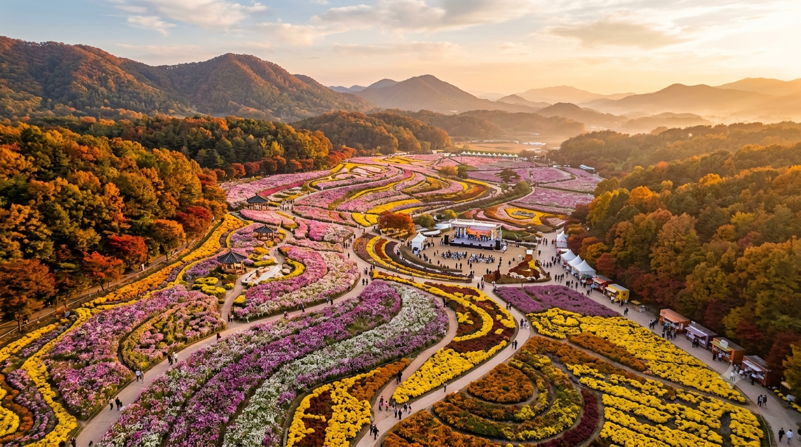
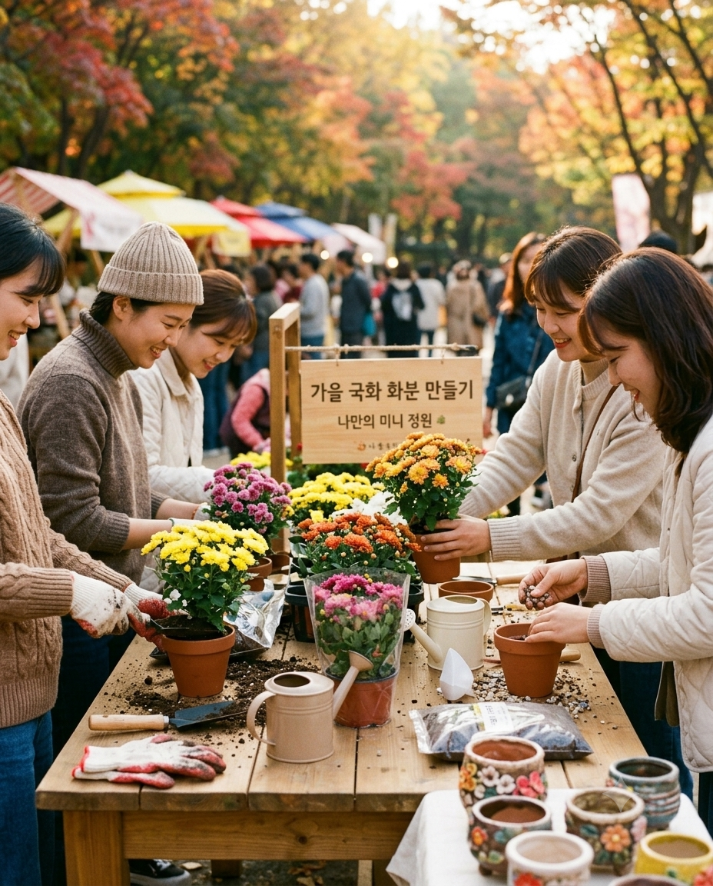

축제 기간
2026.10.09 ~ 10.25 (17일간)
ABOUT FESTIVAL
붉고 노란 가을꽃이 화순의 들녘을 물들입니다.
천천히 걸으며 꽃과 햇살을 만나는 가장 따뜻한 계절의 박람회입니다.

2026.10.09 ~ 10.25 (17일간)
전남광주 화순군 도곡면 효산리 156
09:00 ~ 18:00
야간 개장 ~ 21:00 (주말)
성인 5,000원 / 청소년 3,000원
미취학 아동 무료
EVENTS & PROGRAMS
"보고, 즐기고, 추억하는 화순 가을꽃축제의 다채로운 오감만족 프로그램!"

코스모스, 국화, 댑싸리 등 가을꽃 20여 종이 이어지는 산책 정원입니다.
포토존 5곳 운영. 해 질 무렵 노을빛 아래가 가장 예쁘게 나옵니다.

나만의 국화 화분 만들기. 현장 접수 가능합니다.
잔디 피크닉존에서 돗자리와 간식을 즐기세요. 대여 서비스가 있습니다.

화순 고인돌 선사시대의 생활 방식을 직접 체험할 수 있는 참여형 공간으로 운영됩니다.
LIVE PERFORMANCES
날짜를 선택하면 그날의 공연 일정이 표시됩니다.
LOCATION & TRANSPORTATION
내비게이션에 “화순군청”을 검색해 주세요.
광주 도심에서 약 30분, 호남고속도로 동광주IC 이용 시 약 40분 소요됩니다.
광주 유스퀘어 터미널에서 화순행 시외버스 이용 후 축제장 셔틀버스로 환승합니다.
축제 기간 주말에는 셔틀버스를 20분 간격으로 운행합니다.
제1주차장(정문 앞), 제2주차장(셔틀 연계)을 운영합니다. 주차료는 무료입니다.
주말 오전 11시 이후에는 혼잡하니 제2주차장을 이용해 주세요.
FAQ
성인 5,000원, 청소년 3,000원이며 미취학 아동은 무료입니다. 화순군민 할인이 있습니다.
무료 주차장 2곳을 운영하며, 주말에는 제2주차장과 셔틀버스를 이용하시면 편리합니다.
목줄을 착용하면 야외 정원 구역에 동반 가능합니다. 실내 체험관은 출입이 제한됩니다.
우천 시 야외 공연은 일정이 변경될 수 있고, 실내 체험은 정상 운영합니다. 공식 홈페이지 공지를 확인해 주세요.
현장 접수처에서 선착순으로 신청합니다. 단체 신청은 사전 전화 문의가 필요합니다.
매일 09:00~18:00 운영합니다. 문의: 000-000-0000